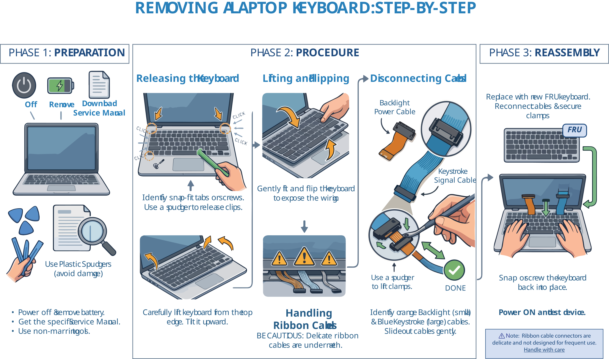
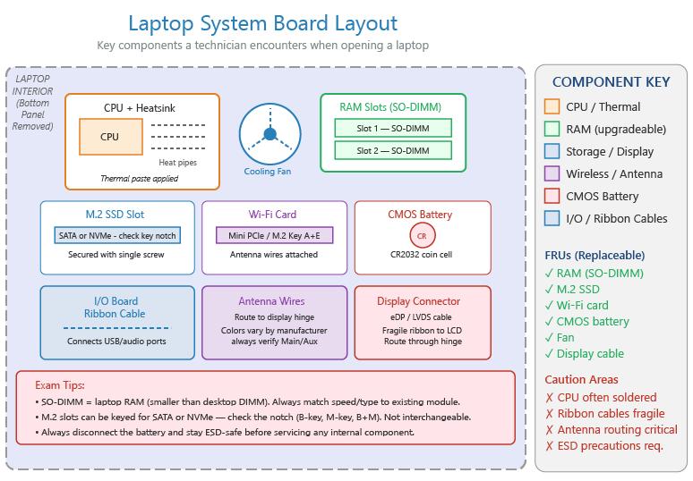

🔧 Laptop Repair & FRU Field Guide
Device serviceability, keyboard replacement, and system board access for hands-on technicians
Device Serviceability Spectrum
Not all mobile devices are designed to be repaired by end users or technicians. Always verify warranty status before attempting any repair — unauthorized disassembly can void warranties and trigger tamper-evident seals.

Least → most field-serviceable mobile devices
Wearables
Smartwatches, fitness trackers — almost never user-serviceable (compact size, waterproof seals)
Smartphones
Generally NOT field-serviceable — sealed unitary construction, glued components
AR/VR Headsets
Manufacturer-serviced only — limited user-replaceable parts (face cushions, straps)
Tablets
Varies by manufacturer — some allow battery/screen replacement
Laptops
Most field-serviceable — RAM, storage, batteries, Wi-Fi cards often FRUs
Removing a Laptop Keyboard

- 1Preparation
Power off the laptop and remove the battery. Download the service manual for your specific model. Use plastic spudgers to avoid damaging fragile plastic parts. - 2Release the Keyboard
Identify snap-fit tabs or screws (often near the F-keys). Use a plastic spudger to gently release the clips. - 3Lift and Flip
Carefully lift the keyboard from the top edge and tilt it upward. - 4Disconnect Cables
Identify the backlight power cable (small, orange) and the keystroke signal cable (larger, blue). Use a spudger to lift the plastic clamps, then slide the cables out gently. - 5Reassembly
Replace the keyboard with a new FRU, reconnect cables and clamps, and snap or screw the keyboard back into place.
⚠️ Handle With Care
Ribbon cable connectors are delicate and not designed for frequent use — repeated connect/disconnect cycles can damage the contacts.
Accessing the System Board

Key laptop system board components and their locations
Initial Disassembly
Typical sequence: remove battery → lower access panel → keyboard → top/bottom case screws.
Key Components
Memory modules, coin cell battery (system clock), antenna wires, display connector assembly, ribbon cable to the I/O board.
CPU & Cooling
CPU sits under the heatsink — replaceable only if not soldered. Clean old thermal paste completely before applying fresh paste.
I/O Board
Small separate board controlling external ports (USB, audio) — linked via a delicate ribbon cable, a common laptop FRU.
💡 Pro Tips
- Modern laptops trend toward slimmer profiles, flat ribbon cables, and limited airflow — expect fans to run more often in compact designs.
- After reassembly, run a hardware monitoring app (e.g., CPUID) to verify CPU temperature is correct.
- Always name and photograph screw locations during disassembly — laptop screws vary in length by position.
This cheat sheet is from the CompTIA A+ 220-1200 Series Complete Study Guide. Learn More About the Book →